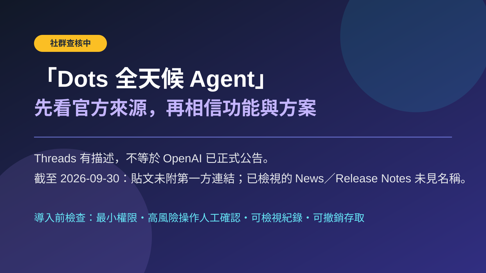

Threads｜所謂 OpenAI「Dots 全天候 Agent」：社群宣稱與查核邊界

一句話摘要
這則 Threads 貼文描繪一個很吸引人的「長駐型、可主動辦事的 AI Agent」願景；但貼文沒有連到 OpenAI 官方公告，截至擷取時也沒有找到可核對的官方 Dots 或 GPT-6 Astra 資訊，因此不能把它當成 OpenAI 已正式上線的產品消息。
原始貼文說了什麼
Prompt Case（`@prompt_case`）在 2026-09-30 的串文中，將「Dots」描述為由「GPT-6 Astra」驅動的 always-on proactive agent，並宣稱它：
- 可在背景持續運作，而非只在使用者提問時回應。
- 擁有獨立雲端電腦與瀏覽器環境。
- 可連接超過 4,000 個應用程式、逐漸理解工作習慣與目標。
- 可協助餐廳／機票、發票、程式、提案、報告、會議與待辦追蹤等工作。
- 可由使用者設定可自主操作、需先同意與禁止的操作；更改密碼一律由使用者本人完成。
- 預設以唯讀方式做背景研究，不自行發訊息或修改內容。
- 先提供給 ChatGPT Pro、Business Premium、Enterprise 等方案，第一個 Dot 不另收費。
以上是作者的社群描述，並非本文確認的 OpenAI 產品規格。貼文約有 2.2 萬次瀏覽；互動數字會變動，僅代表頁面擷取時的可見狀態。
查核結果：目前只有社群來源
擷取日期為 2026-09-30。原始串文沒有附上 OpenAI News、Help Center、產品頁或文件連結。
本文另外檢視：
- OpenAI News：https://openai.com/news/
- ChatGPT Release Notes：https://help.openai.com/en/articles/6825453-chatgpt-release-notes
在擷取到的頁面文字中，未找到 `Dots` 或 `GPT-6 Astra` 字樣。這不等於能證明某項產品絕不存在；它表示此貼文的重要名稱、能力、方案與價格資訊，目前缺乏可追溯的第一方佐證。
既有 AI 學習雷達也已多次遇到「GPT-6 Astra」相關社群展示，結論一致：模型名稱和端到端能力不能因為貼文敘述而升格為 OpenAI 官方事實。
為什麼這個概念仍值得關注
即使名稱與上線資訊未獲證實，貼文提到的產品設計問題很值得作為 Agent 導入檢核表：
- 長時間背景運作是否有可見的任務狀態、紀錄與可中止機制？
- 外部服務連接是否按最小權限原則，並把唯讀與可寫入權限分開？
- 付款、帳號、密碼、發送訊息、刪改資料等高風險動作是否強制人工確認？
- Agent 的記憶、偏好與目標資料保存在哪裡，可否檢視、修正與刪除？
- 任務失敗、誤操作或外部網站改版時，是否能復原並通知使用者？
實務建議
在官方文件、帳號內功能或正式公告尚未可驗證前：
- 不要依據此貼文購買方案、交付帳密、支付資料、OTP 或長效登入工作階段。
- 不要將「4,000 個應用程式」、「含首個 Dot」或特定方案資格視為固定規則。
- 若日後出現官方連結，應重新核對產品名稱、可用地區、方案、權限模型、資料處理與人工確認規則。
- 對任何可操作外部系統的 Agent，先使用測試帳號、低風險資料與可撤銷權限驗證。
原始與查核連結
- 原始分享：https://www.threads.com/share/BAPqVSGDfb/
- canonical Threads：https://www.threads.com/@prompt_case/post/Dd4V5AUjbB-
- OpenAI News：https://openai.com/news/
- ChatGPT Release Notes：https://help.openai.com/en/articles/6825453-chatgpt-release-notes